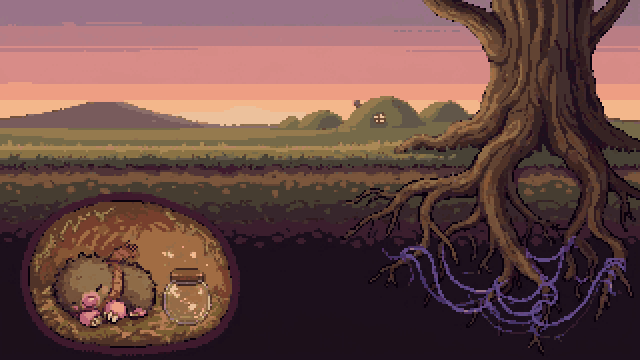
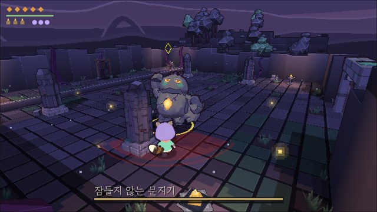

IT development · 털보네공업사
Beardworks
Beardworks (털보네공업사, “the bearded one’s workshop”) is an independent, one-person software company based in South Korea. We build mobile apps, websites, server-side systems and AI services, as well as small games. Our own projects are open source.
Work

Released 2026-11-10 · Web · Android · PC
Naïl: Under the Roots
A top-down action roguelite in which Naïl, a baby mole, follows the roots of a withering great tree deep underground. Fight with well-timed parries and rhythmic attacks, free neighbors entangled in threads, and help them return to the village. Available in eleven languages.
Dialogue portraits, illustrations and sprites were made from originals generated with a Google Gemini image model, then converted to pixel art and touched up.
Special thanks Naïl, my proud son

In development · Web · Android dev builds
Knellroot
A low-poly 3D action RPG about a small, hooded raccoon wandering deep underground in search of the source of a distant bell. Fight groups of enemies from a quarter-view perspective, then lock on to face towering guardians in close, one-on-one battles. Set in the same world as Naïl, far in the future.
The 3D models of the wanderer, enemies and guardian were made from originals generated with a Google Gemini image model, turned into 3D with Meshy, then reduced and touched up.
Dedicated to Haron, my beloved youngest son
Hire us
Beardworks is a one-person software company run by a full-stack developer who has been building software since 2010 — building and leading apps and services in finance, the public sector, energy, home appliances and retail — and who co-invented a patented beacon-based service system. We take on projects involving mobile apps and SDKs, web and server-side systems, LLM-powered AI services, and build and release automation. We also offer technical consulting, including software architecture and code reviews.
Send a brief description of your project and your expected timeline through our contact form. We will review the scope and timeline and get back to you.
Development projects, game inquiries, bugs and feedback — every channel and a form to write to us directly are on our contact page.